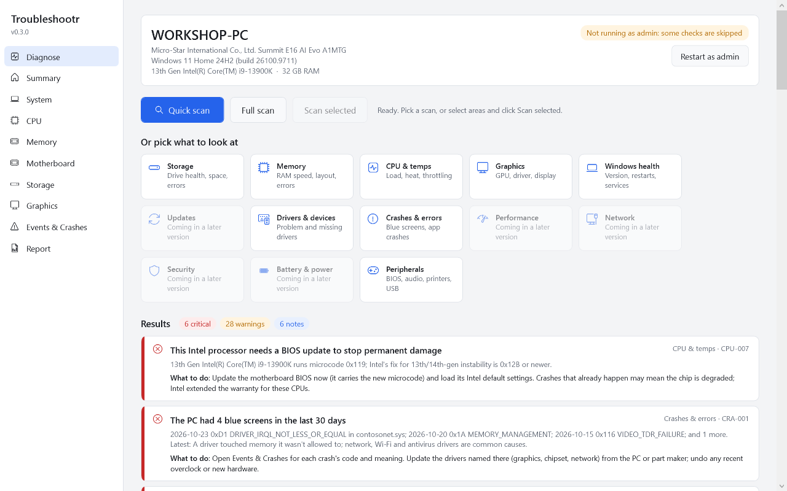
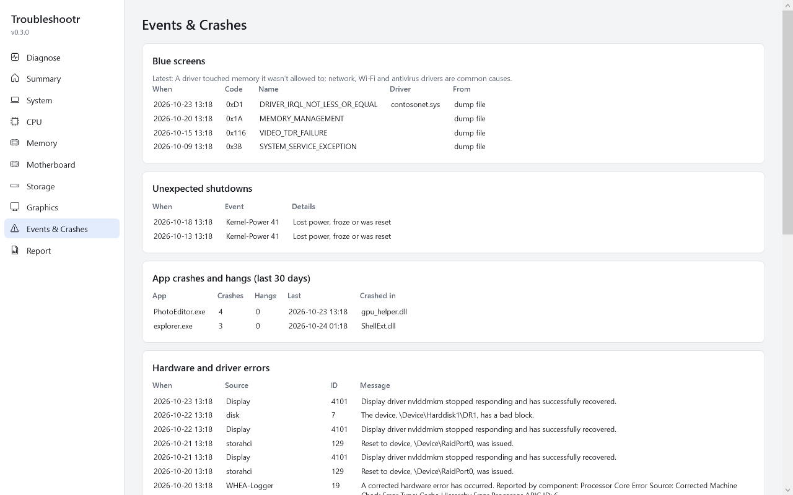
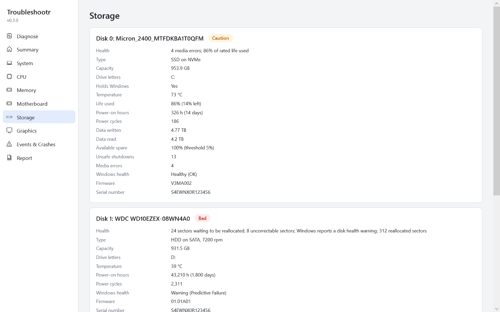
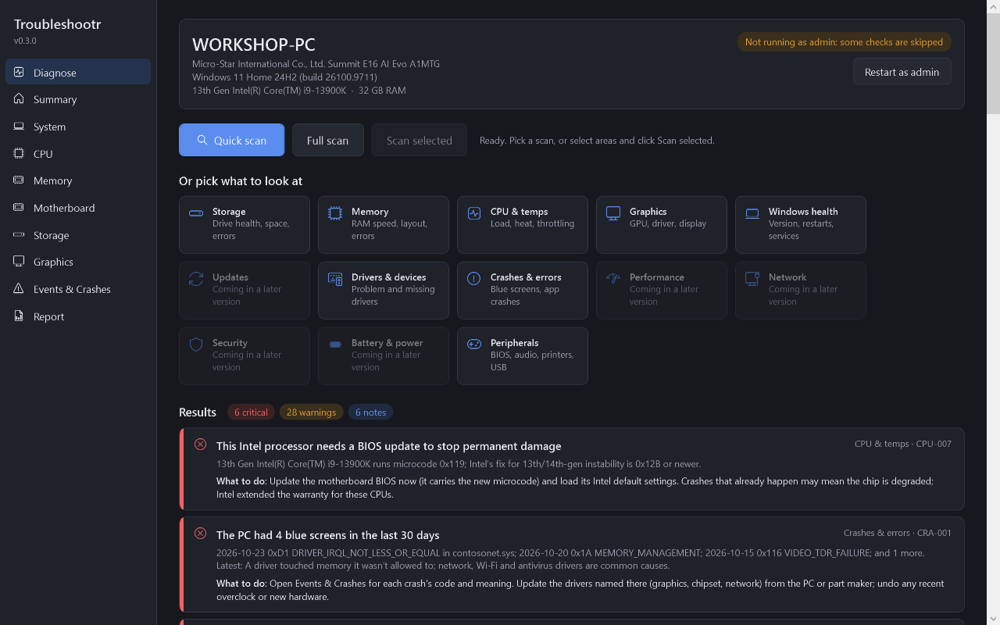
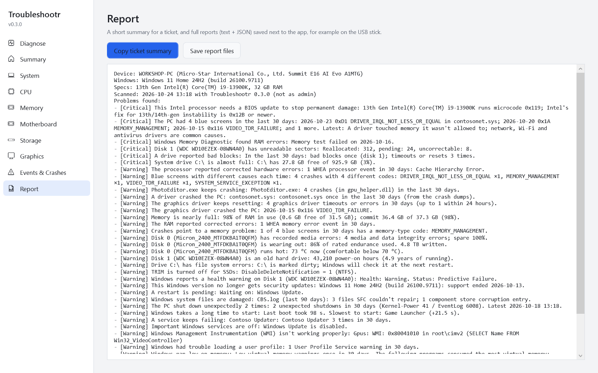
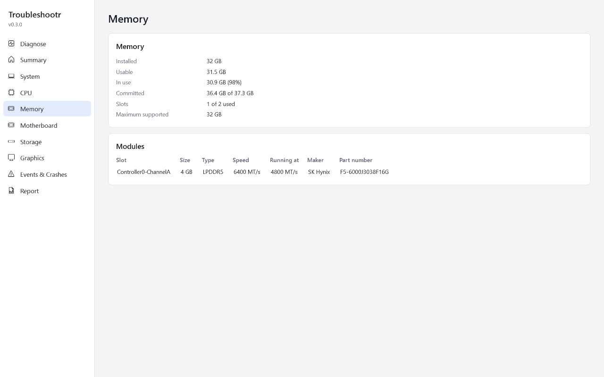
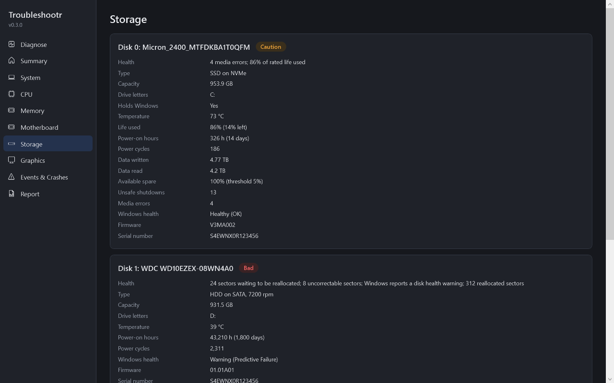
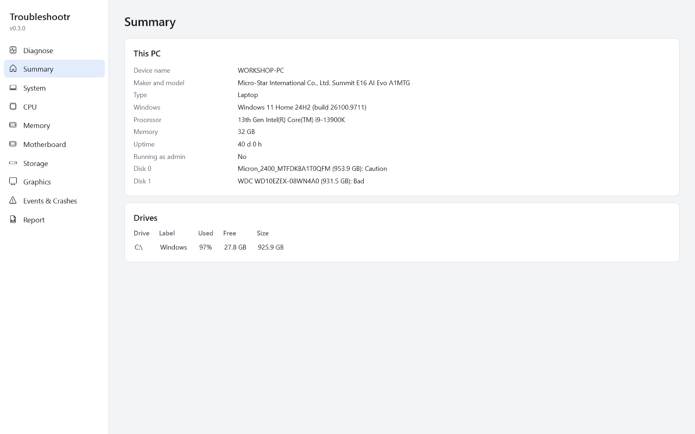
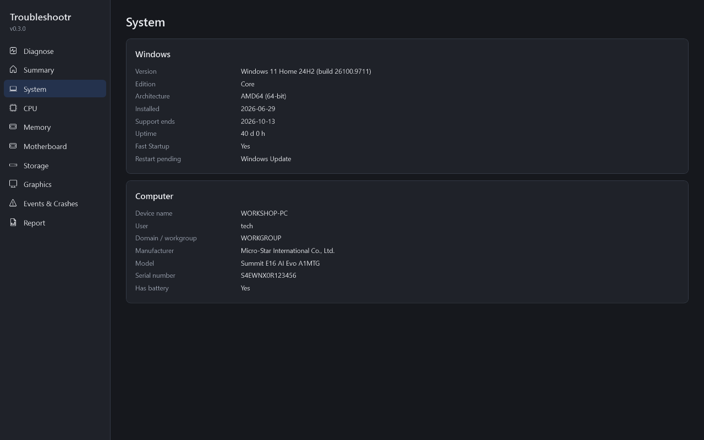

One scan finds failing drives, blue screens, bad RAM, crashing apps, broken services and more. Every problem is ranked by how serious it is, with the actual numbers and what to do about it. Portable: run it from a USB stick, nothing to install.

Built for technicians and enthusiasts. Every finding shows the evidence (the real numbers), not just a red light.
CrystalDiskInfo-level SMART and NVMe health: Good, Caution or Bad, reallocated and pending sectors, wear, temperature and hours. Reads SATA drives in USB enclosures too.
Every crash in the last 30 days, its code in plain English, the driver at fault from the dump file, and the pattern: one bad driver, the graphics card, or random codes that point at RAM or power.
Disk errors, hardware (WHEA) errors, graphics driver resets, unexpected shutdowns, failing services and apps that keep crashing, pulled out of Event Viewer and grouped. Plus a searchable error timeline.
RAM running below its rated speed, single-channel setups, mismatched sticks, failed Windows Memory Diagnostic results, corrected memory errors, and crash codes that point at bad RAM.
Intel 13th/14th-gen chips missing the microcode fix that stops permanent damage, machine-check errors, firmware speed limits, graphics driver timeouts and GPU crashes.
Unsupported Windows versions, pending restarts, broken WMI, important services turned off, damaged system files (SFC/DISM), temporary user profiles, slow boot and what causes it, and the Reliability Monitor score.
Copy a short summary straight into your ticket system, or save full text and JSON reports next to the app on the USB stick. The command-line tool can anonymize a report (strips names and serial numbers).
Tabs for System, CPU, Memory (every stick, speed and part number), Motherboard and BIOS, Storage, Graphics and Events & Crashes. Every value can be selected and copied.
Portable and read-only: no installer, no registry writes, no kernel driver, nothing left behind. Works without admin; "Restart as admin" adds SMART, crash dumps and boot timing.
Critical means near-certain trouble. When in doubt, Troubleshootr says so instead of raising a false alarm.
"Disk 1 has unreadable sectors: reallocated 312, pending 24. Back it up now."
"Blue screens with different causes each time: test the RAM and remove any overclock."
"Crash dumps are turned off, so the next blue screen can't be diagnosed."
Light and dark themes follow Windows. These show a demo PC with one of every problem.








A new preview comes out after each part is finished. The full list of planned checks is in the check catalogue.
Needs .NET Framework 4.7.2, which is built into Windows 10 (version 1803 and later) and Windows 11. Technicians can also use
troubleshootr-cli.exe for scripted scans and JSON output.